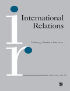

收录于合集

简 介
** 【作者】** 凯·奥珀曼（Kai Oppermann）毕业于柏林自由大学，2007年在科隆大学获得政治学博士学位。现就职于开姆尼茨工业大学，主要研究领域包括英国外交政策、德国外交政策、欧洲一体化中的全民公决问题。
瑞恩·比斯利（Ryan Beasley）现就职于圣安德鲁斯大学。曾经在瑞士日内瓦的非政府组织工作，研究小武器和轻武器对人道主义救援人员和行动的影响。
朱丽叶·卡伯（Juliet Kaarbo）现就职于爱丁堡大学政治与国际关系学系，担任外交政策私人主席，主要研究领域包括政治心理学、领导和决策、群体动力学、外交政策分析、外交政策角色和议会政治系统。
** **【 编译 】****缪高意（中国社会科学院大学）
** **【 校对 】****李雯珲 刘孝玉
** **【 审核 】****周心培
** 【来源】** Kai Oppermann, Ryan Beasley and Juliet Kaarbo. “British foreign policy after Brexit: Losing Europe and finding a role.” International Relations __ (2019): __ 1-24.
** 【期刊】** 《国际关系》（International Relations），是国际关系领域的顶尖期刊之一，由SAGE出版社与大卫·戴维斯纪念研究所(David Davies Memorial Institute)联合出版编辑。其2017年影响力因子为1.172，在“国际关系”类别的85种期刊中排名第43。

脱欧后的英国外交政策：
失去欧洲并找到一个新角色
British foreign policy
after Brexit: Losing Europe and finding a role
▲凯·奥珀曼
▼朱丽叶·卡伯
内容提要
2016 年脱欧公投是英国外交政策的 转折点 。此前，英国依托 欧盟 在世界舞台上发挥影响力。离开欧盟意味着英国外交政策的一个 核心支柱 已然坍塌，这势必导致其国际角色发生根本性改变。与此同时，英国外交政策如何重新定位及如何发挥作用仍是未知数。英国外交政策角色的 核心问题 是：在 避免陷入孤立状态 的同时，如何持续 增加政策自主性 ，找到被其他国际行为体广为接受的外交政策角色定位。
本文首先介绍 角色理论 （Role Theory）中 角色定位 （Role Location）和 角色冲突 （Role Conflict）的概念，并运用该理论论证 英国如何在国际体系的互动中被社会化为特定角色以及影响其外交政策 。随后，文章从英国自身的宣传、行动和其他国家的回应两个方面系统分析了英国脱欧后的六个外交政策角色，具体包括 孤立 者 、全球贸易大国、 全球性 大国、欧盟的区域合作伙伴、英联邦领袖和美国的忠实盟友 。最后，文章得出结论：在很大程度上，国际社会对当前英国不同角色的尝试持消极态度，英国的角色冲突暂时还没有得到解决，且举步维艰。
鲍里斯·约翰逊
文章导读
**1
**
角色定位与角色冲突
霍尔斯蒂（Holsti）首先将 角色理论 引入国际关系研究中，他确定了几个典型角色，如忠实的盟友、区域领袖、孤立者。当代角色理论主要研究国家（自我）如何定义和改变其角色，以及其他国际行为体（他者）如何在此过程中发挥影响。
角色定位 是指国家在与其他国际行为体进行社会和战略互动中发现合适的国际角色。 角色冲突 是外交政策中决策理论的一个重要方面，当前有很多种关于角色冲突的说法，本文主要涉及两个：第一，国家和其他国际行为体之间可能因为国家扮演的特定角色而发生角色冲突。在成功的角色定位过程中，自我和其他角色之间进行反复互动，最终对自我应该扮演的角色的看法趋同，从而解决角色冲突；第二，角色冲突发生在国家追求两个或多个存在矛盾行为的角色时，这是内部的角色冲突，可能导致碎片化、不连贯的外交政策。因此，早期角色定位和角色冲突的解决对于国家最终的外交政策取向至关重要。
文章抛开国内分歧，将 英国政府 视为英国在国际舞台上的代理人，追踪公投后其是如何扮演一系列外交政策角色，同时，审视 国际社会 对这些角色的反应。
**2
**
英国脱欧后的外交政策角色定位
在国际社会对英国脱欧的一片质疑声下，英国不断寻找外交政策上的新角色。总的来说，英国寻求的外交政策角色可以概括为全球贸易大国、全球性大国、欧盟的区域合作伙伴、英联邦领袖和美国的忠实盟友。这些角色有不同的偏重之处，而最重要的共同点是，都反映了英国拒绝扮演孤立者角色的事实。
2.1 孤立者（ Isolate ）
公投后，英国政府的首要考虑就是避免在国际舞台上被各国确认为孤立者的角色。为避免成为孤立者，英国反击“英国可能会缩减履行国际义务的开支，转向国内事务优先”这一说法，试图减弱将脱欧等同于 小英格兰主义 （Little Englanderism）的印象。然而，国际社会普遍认为，英国脱欧是其 自我降级 的行为，会影响其国际话语权，并最终扮演一个 孤立者 的角色。
倘若英国拒绝孤立者的角色，那么英国实际在追求什么样的角色呢？ **
**
2.2 **全球贸易大国 (**Global trading state )
公投后，英国一直在努力争取全球贸易大国的角色，这一角色将英国设想为一个 在全球自由贸易中外向的、崇尚自由主义和国际主义的领导者 。正是英国脱欧后获得的自主权使其能够发挥全球贸易大国的作用。然而，国际社会对英国的这种努力持怀疑态度。英国的许多国际合作伙伴都强调了进行贸易协定谈判的复杂性，并明确表示会优先考虑与 欧盟的贸易关系 ，而非英国。
脱欧公投以来，英国试图从主要的非欧盟贸易伙伴那里获得贸易承诺的努力多数 以失败告终 。其国际合作伙伴表示，在英国与欧盟的关系变得清晰以前，他们不愿与英国就脱欧后的贸易合作展开实质性讨论。
迄今为止， 美国政府 对于英国脱欧后的贸易协定 响应最为积极 。特朗普对与英国达成重大贸易协定的前景表示欢迎，并用之以驳斥他所谓的“欧盟保护主义”。
总的来说，除美国以外的其他国家认为英国缺乏追求全球贸易大国地位的自主权，因此这一角色备受质疑。
2.3 全球性 **大国 (**Great power )
自公投以来，英国也追求大国的角色。和全球贸易大国的角色一样，这的角色也是 全球性的 ，但更加强调军事、经济和体制资源以及这些资源赋予的 特殊责任和权利 。虽然人们普遍认为英国已不再能发挥全球性大国的作用了，但脱欧后，英国人的这一野心又再次燃起。
为了塑造大国的角色，英国将自己描绘成具有全球影响力和负责任的主要军事力量。英国政府也强调英国强大的经济实力，将英国视为“ 世界第五大经济体 ”、“ 世界上最大的金融资本市场 ”。与此同时，英国政府强调英国影响广泛的 软实力资产 ，包括民主、自由和法治等规范和价值观、作为“世界语言”的英语、世界上访问量最大的博物馆和最好的大学。
然而，国际社会对“全球性大国英国”的看法恰恰相反，认为英国脱欧会加强其在世界上的地位的说法乃无稽之谈，相反，英国脱欧会削弱其国际地位。
2.4 **欧盟的区域合作伙伴 (**Regional partner to the EU )
自英国脱欧公投以来，英国也在为成为欧盟的区域合作伙伴这一角色而努力。这一角色反对孤立状态，但较全球贸易大国和超级大国而言范围更小。支持这一角色的观点认为英国 和欧盟 正在发展“ 在经济和安全合作领域深入而特殊的伙伴关系 ”。
英国已经明确表示，它将继续致力于与欧盟在欧洲安全以及在司法和内政方面的密切合作。这一角色拟寻求与欧盟的“ 新联盟 ”和“ 大胆的新战略协议 ”。在英国看来，区域合作伙伴的角色不会因脱欧而受到阻碍，反而会因其获得更大自主权而更加具有可行性。
然而，欧盟 27 国更倾向于将英国视为恳求者，而非区域伙伴。欧盟社会普遍认为，英国在与欧盟的谈判中处于 劣势地位 ，会承担脱欧后的惨重损失。欧盟 27 国在英国脱欧谈判中首要关注的是维持其余成员国的一体化，而非与脱欧后英国的关系。
综上所述，鉴于欧盟对英国脱欧的看法以及其对于欧洲一体化进程的重视，英国追求欧盟的区域合作伙伴这一角色受到很大的限制。
2.5 **英联邦领袖 (**Leader of the Commonwealth )
自英国脱欧以来，英国也在追求英联邦领袖这一角色。该角色反对孤立角色，其不仅仅强调欧洲以及欧盟的区域合作伙伴关系，而且也将重点放在提升和英联邦国家的历史联系，并将英联邦国家转变为英国更广泛的外交和经济关系的中心。
公投后，英国政府访问 澳大利亚、加拿大、印度、肯尼亚、新西兰 等英联邦国家，以强化英联邦领袖这一角色。具体言之，英国通过强调与英联邦国家的共同价值观和共同遗产来追求这一角色。此外，在推动开启有关英国脱欧后关系的谈判时，英国优先考虑与英联邦国家的贸易协议。
英联邦国家对英国的这一角色表现出 不冷不热的态度 。包括澳大利亚、印度、加拿大和新西兰在内的英联邦国家，以及英联邦官员，都对英国的这一角色公开表示怀疑。同时，英联邦国家也担心英国脱欧将对他们与欧盟的贸易关系产生负面影响。
目前来看，英国追求英联邦领袖的角色并未在其他英联邦国家产生共鸣，其 实用性受到挑战 。
2.6 ** 美国的忠实盟友（**Faithful ally to the United States ）
英国也在为美国的忠实盟友这一角色实施更有效的外交政策。作为美国最亲近的国际伙伴，英国有望确保美国支持英国的利益，以增强英国在国际舞台上的影响力。
当前，美国已 积极回应 了英国的这一角色。包括奥巴马总统在内的美国政客表示英国脱欧不会影响英美关系的特殊性，特朗普甚至支持英国脱欧并对此结果表示欢迎。
然而，对于这一角色，有两点需要注意。第一，特朗普政府强调“美国优先”，其经济民族主义的思想让英美亲密关系的可持续性极具不确定性。第二，这一角色在英国国内备受争议。这种担忧自 2003 年伊拉克战争逐渐升温，特朗普任美国总统后，其言论在英国国内也是不受欢迎的。
**3
**
结 论
目前，英国已经失去了欧洲，而尚未找到一个新的角色。脱欧后，英国陷入“角色危机”，面临未来外交政策取向的根本转折点。英国在寻求不同角色的过程中可能会面临角色冲突，同时追求这些角色则可能会导致一个不连贯的外交政策。此外，国际社会的回应在很大程度上是消极的。
目前看来，英国的角色冲突似乎还 没有得到解决 。虽然英国脱欧意味着英国获得更大的自主权，但这不意味着更自由的外交政策。英国外交政策的角色冲突在于其反对孤立主义的目标和国际社会对英国目前塑造的几个角色的排斥。这一冲突的最后结果仍是未知的，但现阶段的 举步维艰 已经为结局的艰难埋下伏笔。